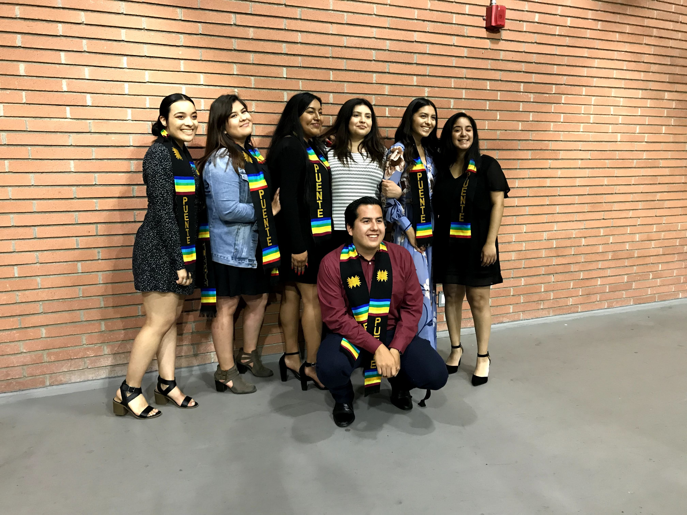

Stefany Carranza
My professional career began in 2016 when I graduated from Lawndale High school. Earned my Associates Degree in Sociology at El Camino Community College in Torrance, with the intent to transfer. I was able to Transfer to the University of California Riverside in Riverside where I am working on completing my final year to receive my bachelor’s degree in Sociology.
I have been working towards the end career goal of becoming a social worker for the county of Riverside. I have always wanted to help those in need, and I believe being a social worker is the right path to providing the correct resources for those in need. My main focus through my academic career has been working with children ranging from infants to young adults who might be in need of resources to make a better life. I believe that through social work I will be able to make a change in these children’s lives and help them reach their full potential as capable citizens of society. My goal is to give these children the appropriate shelter, food, and overall guidance in order for them to thrive in society.
Throughout my academic career I have worked various jobs that I believe are beneficial for my future career. When I was in Community College, I was working for a support program called the Puente Project for about 2 years. Through this program students received help with transferring to a four-year university and become leaders in the Hispanic community and as a result be able to give back to their community. I believe this job help me become a better advocate for those in need. It helps me improve my communication skills as well as helped me improve my organizational skills. Through this job I was able to experience the satisfaction of being able to help students receive the resources they needed or resources they didn’t even realize they needed. Once I transferred to the University of California Riverside, I began to work at a group home called All of Gods Children through this group home I was able to see the lack of resources many of these children receive and it has driven me to want to help children just like them so much more. Through this job I was able to see that working with children is a true passion of mine and that I believe that is something that is driving me to pursue this sort of career. Through this job I was able to see that the importance of what my future career would consist of and what it means to those who will need me. I was able to see the other side of the job, the part that actually affects the children regarding the decisions that a social worker will make. Through this job I was able to see the difference between those who see this field as only a job and those like myself who are truly passionate and actually want to make a difference in these children’s lives and over all in society as a whole.
Experience
Child Counselor
• Provided chidlren with appropraite supervision throughout the day
• Monitored childrens behavioral issues throughout the day
• Implimented coping skills to the chidlren in regards to their behavior
Accountant Assistant
• Employed at the front desk ensuring calls are directed to the appropriate staff members.
• Created a filing system to expedite the recovery of property invoices and bill reports from five years prior.
• Conducted information sessions for the Puente Project Program which supports Latino students with transferring to a university.
• Attended events to represent the program and speak on their behalf regarding the programs benefits and requirements for recruitment.
• Scheduled counseling appointments for students on an electronic record system.
• Assisted with program coordination, such as setting up for the recruitment events and annual program events.
Education
UC Riverside
Portfolio
